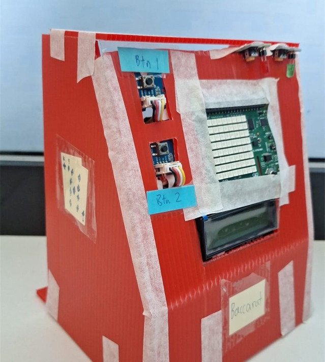
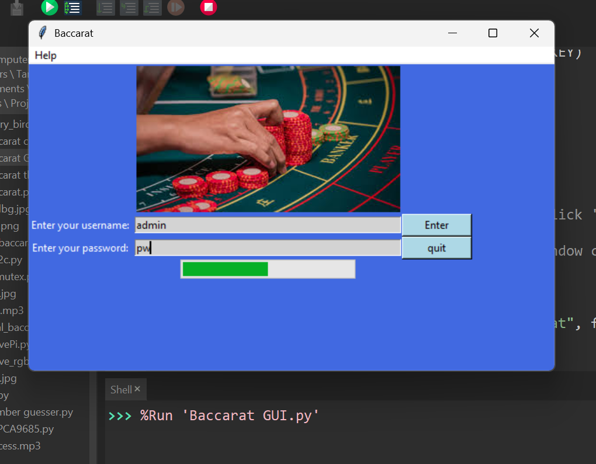
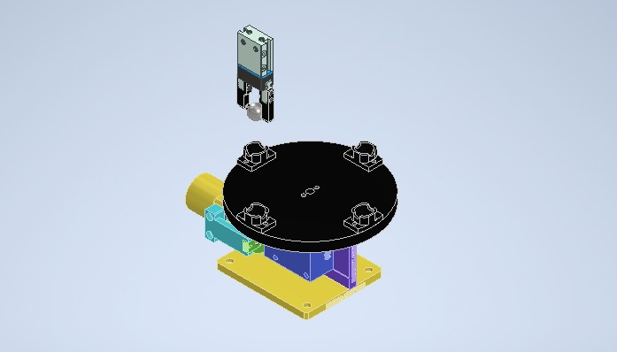
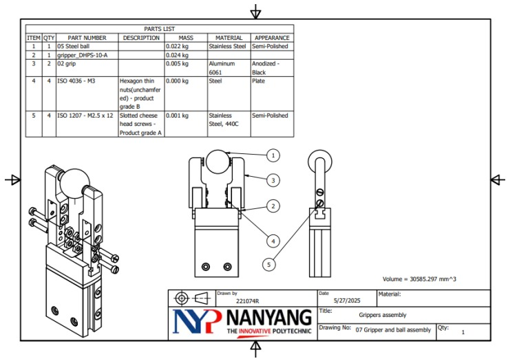
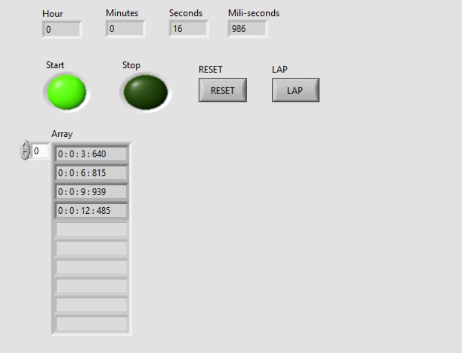
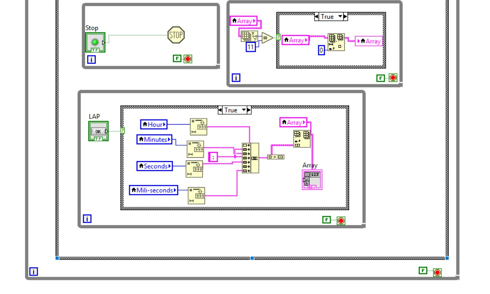
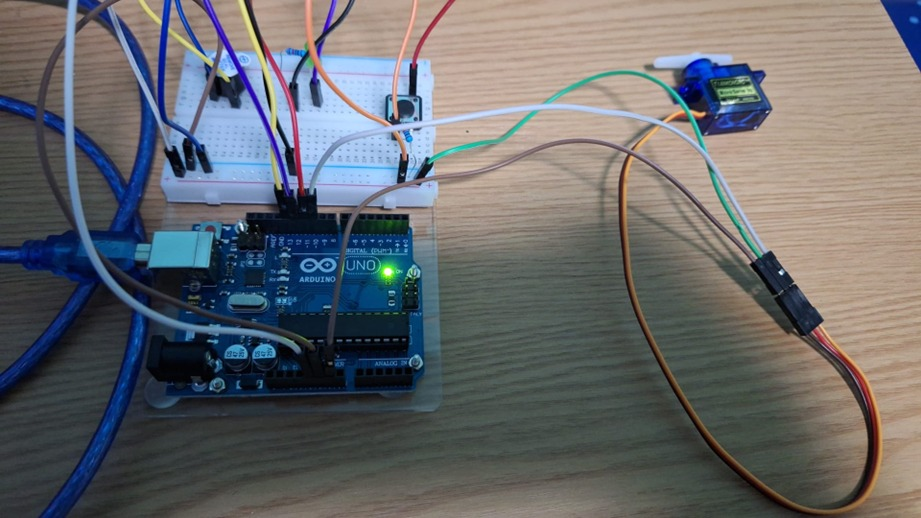
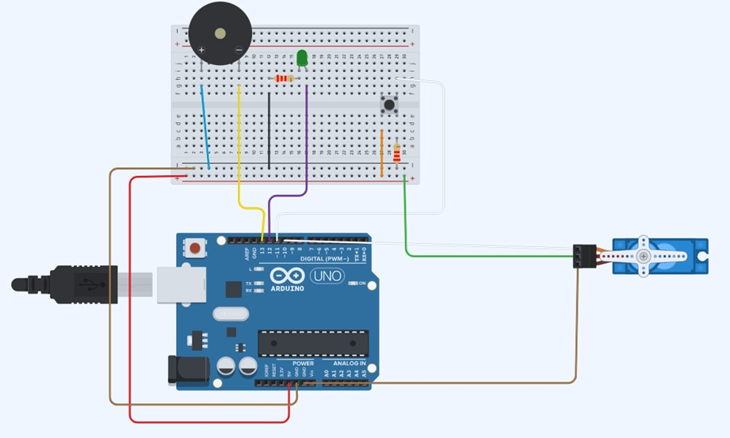
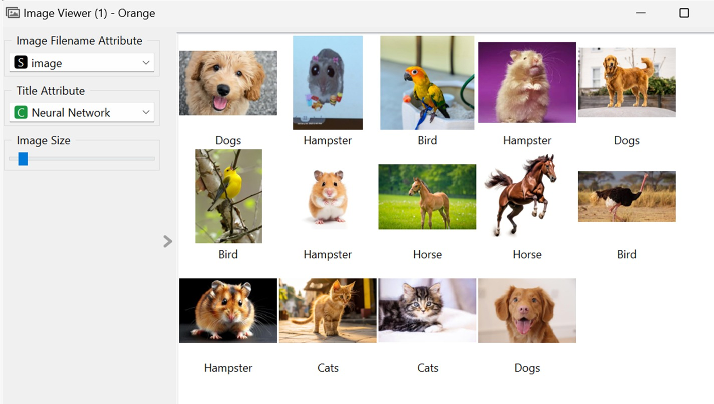
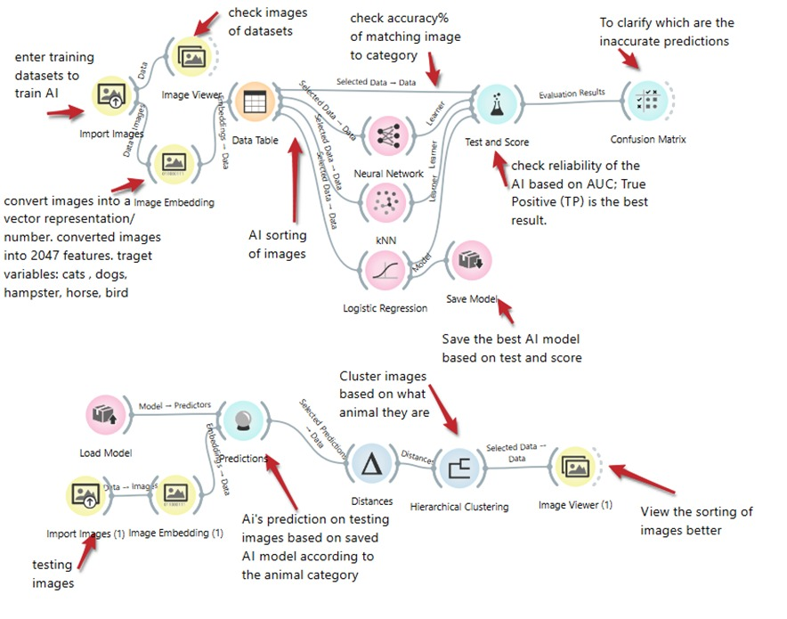

Designed and built an AMR from scratch featuring SLAM and Nav2 for dynamic obstacle avoidance and path planning.
INITIATE_VIEWProgrammed an RC car to drive autonomously around a racetrack using a LiDAR sensor and a gap following algorithm.
INITIATE_VIEW

Automated Baccarat using Raspberry Pi and Python, linking hardware with a GUI and Adafruit IoT for real-time stats.
INITIATE_VIEW

Designed a work holder fixture and gripper fingers in Autodesk Inventor to secure and grip spherical steel balls.
INITIATE_VIEW

Created a stopwatch with start, stop, reset, and lap functions using NI LabView and complex array handling.
INITIATE_VIEW

Developed an Arduino prototype for faster window cleaning, integrating motors, LEDs, and buzzer logic.
INITIATE_VIEW

Trained a neural network model using Orange software to accurately categorize animal images, including blurry ones.
INITIATE_VIEW